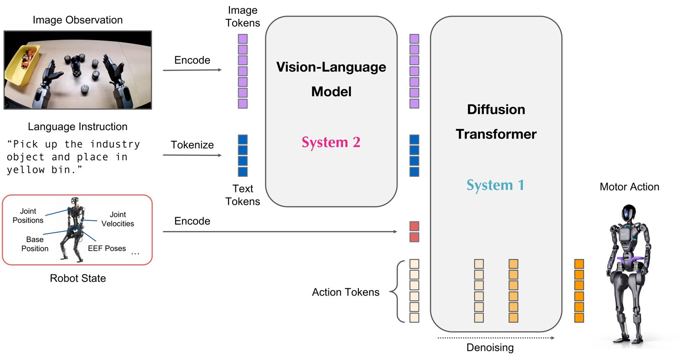
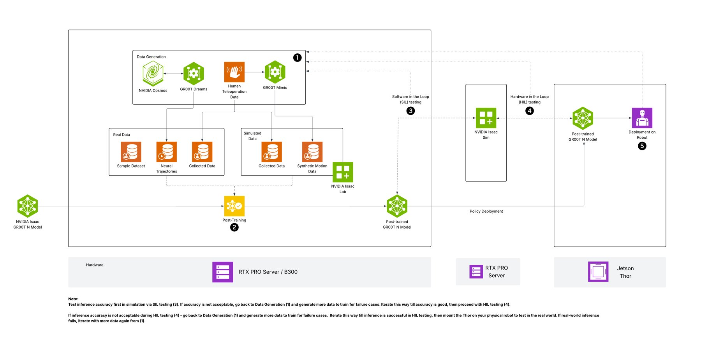
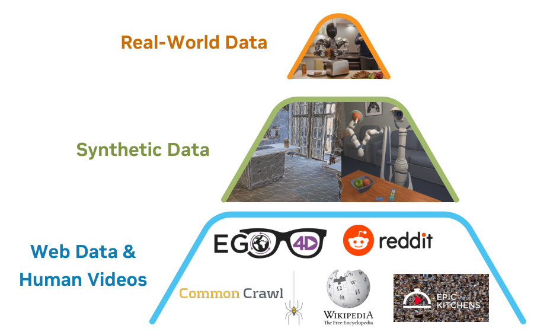
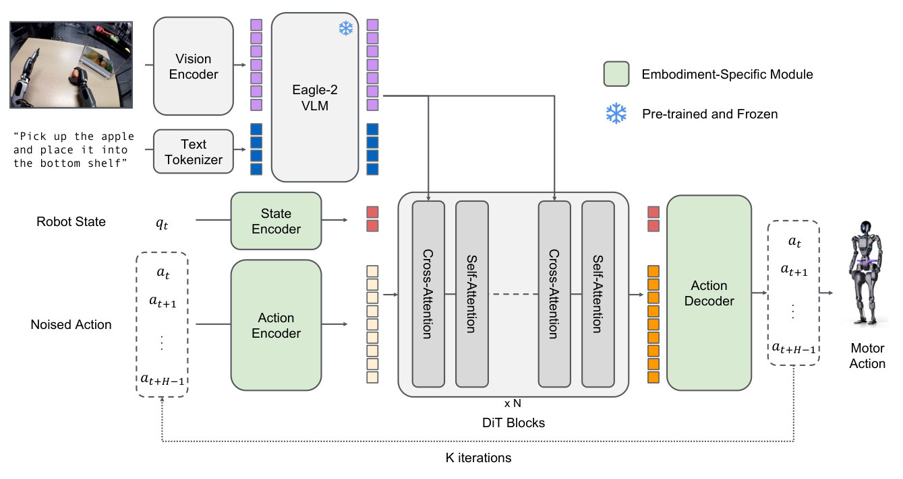
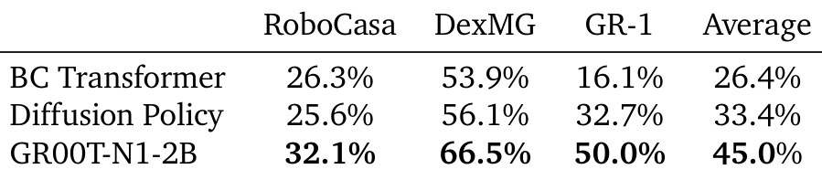
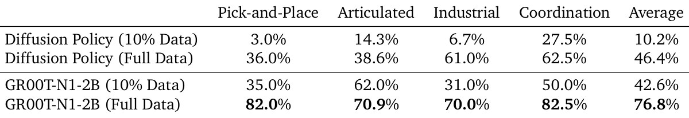

Sim-robot-learning · 归档于 2026-11-15
GR00T N1.7
Isaac GR00T N1.7（GA，main @ 3b49067）：an open VLA for generalist humanoid robots
GitHub Model card N1 paper PDF N1.6 blog
归档到 Robot learning in simulation：跨身体的 imitation VLA，是同文件夹里 GR00T 2 对比的前作；它的 LIBERO checkpoint 也能当 Robotic harness 里的 VLA primitive。
TL;DR
- Problem
- 单台机器人的数据太少，各家机器人的数据又互不兼容。从零训的 policy 在每任务 100 条示范下只有 16–33%（GR-1 仿真）。
- Idea
- 一个预训练好的 VLA：VLM（System 2）读图和指令，DiT（System 1）用 flow matching 出一段连续动作。换机器人只换一组小 MLP，再用自己的数据 post-train。
- Result
- N1.7 换成 Cosmos-Reason2-2B backbone，加 20K 小时人类视频和 relative EEF 动作。LIBERO 四个 suite 94–98%；SimplerEnv Fractal 平均 72.5%，N1.6 是 52.0%。
Problem
换一台机器人或一个任务，就得从头收数据、从头训
Running example · 后面每个 stage 都跟着它走
LIBERO-10 的一条长任务：Franka Panda，两路相机 image 和 wrist_image，任务 KITCHEN_SCENE3_turn_on_the_stove_and_put_the_moka_pot_on_it → 想要：从 base 模型 nvidia/GR00T-N1.7-3B 出发，用 LIBERO-10 的示范 post-train 出一个闭环 policy。
flowchart LR IN["例子输入
LIBERO-10 示范
+ 两路相机"] IN --> A1["从零训
Diffusion Policy
BC-Transformer"] A1 --> AX["没有预训练，示范少就学不会
GR-1 仿真 32.7% / 16.1%"]:::gap IN --> B1["VLM 规划 + 现成 skill
黑盒 VLM 排步骤"] B1 --> BX["先要有底层 policy 和接口
论文没给数字"]:::gap IN --> C1["上一版 N1.6
Eagle backbone"] C1 --> CX["个别任务完全不会
Fractal open_drawer 0/100"]:::gap
这几个数字都不是在 LIBERO 上测的，文档没有给 LIBERO 的 baseline。第一条来自 N1 白皮书 Tab. 2（GR-1 仿真，每任务 100 条示范）；原因取自 §4.5：Diffusion Policy 常搞混任务语义。第三条来自 SimplerEnv README 的 N1.6 对 N1.7 表。
根本问题：机器人数据是一座座“数据孤岛”：身体、传感器、动作空间都不一样，单独哪一份都不够大（N1 白皮书 §1）。 切入点：主干共享，只把 state 和 action 的进出口按身体分开；人类视频、合成数据、真机数据按一个金字塔混着训。
Related work
| 相关工作 | 解决什么 | 怎么解决 | 和本文的区别 |
|---|---|---|---|
| 同一问题 · 别的解法 | |||
| 从零训的 imitation Diffusion Policy, BC-Transformer | 用示范学一个任务的 policy | 每个任务、每台机器人单独训 | 没有跨任务的先验，示范少时成功率低 → GR00T 先在多种身体上 pretrain，再少量 post-train |
| VLM 规划 + 底层 skill SayCan 一类 | 让机器人做长任务 | 预训练 VLM 当黑盒，排底层 skill 的顺序 | 要先有底层 policy 和连接接口 → GR00T 把 VLM 和动作模块端到端一起训 |
| 其他 VLA（本文所属） π0, OpenVLA, RT-2 | 图像和语言直接出动作 | 在机器人数据上微调预训练 VLM | π0 用 mixture-of-experts 接 VLM 和动作模块 → GR00T 只用 cross-attention，VLM 和动作模块可以分别换 |
| 相似做法 · 别的问题 | |||
| 从视频学 latent action LAPA | 让没有动作标签的视频能训 policy | VQ-VAE 从前后两帧抽出 latent action 当标签 | N1 把它当作多出来的一种身体；N1.7 改成人和机器人共用 relative EEF 动作 |
| 合成数据 MimicGen, DexMimicGen, 图像生成增广 | 少量示范扩成大数据集 | 在仿真里变换并回放示范；或用生成模型改图 | 以前只做 in-painting 一类增广 → N1 用视频生成模型造整段轨迹，共 827 小时 |
来源：GR00T N1 白皮书 §5 Related Work，和 N1.7 README 的 What's New。N1.7 没有自己的论文。未另行检索。
Level 1 · Big picture
VLM 看懂场景和指令，DiT 把它变成一段连续动作

怎么读这张图
- 左边三个输入：Image Observation 编码成 image token，Language Instruction 切成 text token，Robot State 单独编码。例子里是两路相机、一句任务描述、8 维 state。
- 中间 Vision-Language Model = System 2：一起读 image 和 text token，输出一串特征。它在模型内部，和动作模块一起训练。
- 右边 Diffusion Transformer = System 1：输入是 state token 和带噪声的 action token；它通过 cross-attention 去看 System 2 的输出。
- 底部 Denoising：动作从噪声开始，去噪几次后成为 Motor Action。
flowchart LR I["Input
2 路相机 + 任务描述
+ 8 维 state"] --> M["VLM → DiT
4 步去噪"]:::win M --> O["Output
16 步动作 · 每步 7 维"]
N1 到 N1.7 每一版改了什么
| 版本 | VLM backbone | 动作模块 | 人类视频怎么用 |
|---|---|---|---|
| N1 2025-03 | Eagle-2（SmolLM2 + SigLIP-2），取第 12 层特征；语言部分冻结 | DiT + flow matching；一次 16 步，4 步去噪；共 2.2B 参数 | 用 latent action 给视频打伪标签，当作一种身体 |
| N1.5 2025-06-11 | Eagle 2.5，为 grounding 调过；VLM 全程冻结 | 16 层 DiT，VLM 后面接 4 层 adapter | 加 FLARE：让模型对齐未来帧的 embedding，不生成未来帧 |
| N1.6 2025-12-15 | 内部 Cosmos-2B VLM，支持原生长宽比；解冻顶部 4 层 | 32 层 DiT，去掉 adapter；大多数身体改用相对 state 的动作 | 博客没提新变化 |
| N1.7 EA 2026-04-18 · GA 2026-07-07 | 新 Cosmos-Reason2-2B（Qwen3-VL 架构） | 新 state / action 最大维度 29 → 132，动作 horizon 16 → 40；共 3B 参数 | 新 20K 小时 EgoScale；人和机器人共用 relative EEF 动作 |
来源：N1 白皮书 §2；N1.5、N1.6 的研究博客；N1.7 README 的 What's New 和 Detailed changes。
Level 2 · Stages
5 个 stage：前三个是模型，后两个是怎么用

怎么读这张图
- ① Data Generation：真机遥操作数据，加上 GR00T Dreams（用 Cosmos 生成视频轨迹）和 GR00T Mimic（仿真里扩增）。
- ② Post-Training：左下角的 GR00T N Model 是 base 模型，用上面的数据微调成 Post-trained 模型。例子走的就是这一步。
- ③ SIL 和 ④ HIL：先在 Isaac Sim 里闭环测，再接上真实的 Jetson Thor 测；不达标就回到 ① 补数据。
- ⑤ Deployment on Robot：模型跑在机器人上的 Jetson Thor。
flowchart TD S1["1 · Data + embodiment tag
LIBERO_PANDA
2 路视频 · 8 维 state
7 维 action"] S1 --> S2["2 · System 2 · VLM
Cosmos-Reason2-2B
→ 2048 维 token 特征"] S2 --> S3["3 · System 1 · DiT
4 步去噪 → 16 步动作"] S3 --> S4["4 · Post-train
20K 步 · batch 640
8 GPU"] S4 --> S5["5 · Serve + deploy
ZMQ server · TensorRT
H100 上 22.9 ms"] click S1 href "#stage-1" click S2 href "#stage-2" click S3 href "#stage-3" click S4 href "#stage-4" click S5 href "#stage-5"
点击 stage 展开 Level 3 细节。
Level 3 · Details
每个 stage 的细节
Stage 1 Data 和 embodiment tag 机器人示范 → 模型能读的 video / state / action / language
- Why：每种机器人的 state 和 action 维度、含义都不同，模型得知道怎么读。
- 数据格式：LeRobot v2，外加一个
meta/modality.json。它说明拼在一起的 state / action 数组怎么切成有名字的字段，以及有哪些视频 key。 - Embodiment tag：每条命令都要带。它决定用哪份 modality config、哪套 normalization，以及模型里哪一组按身体分的 MLP。模型最多容纳 32 种身体。
- 三类 tag：pretrain tag 可以直接用 base 模型 zero-shot（DROID、
XDOF、REAL_G1、REAL_R1_PRO_SHARPA等 8 个）；posttrain tag 要用微调过的 checkpoint（LIBERO_PANDA、两个 SimplerEnv、UNITREE_G1_SONIC）；自己的机器人用NEW_EMBODIMENT。 - 1.7 新 Relative EEF 动作：动作写成相对当前末端位姿的变化量，人和机器人共用同一种表示。README 说这是能直接用人类视频的原因。
- 1.7 新 人类视频：pretraining 加了 20K 小时 EgoScale。Model card 写 pretraining 共 13 个数据集、2,160 万个数据点。
- 1.7 新 多数据集混合：微调可以给多个 dataset path，按权重混合。

- 底层 Web Data & Human Videos：量最大，离具体机器人最远。N1 用了 Ego4D、EPIC-KITCHENS 等 7 个人类视频数据集。
- 中层 Synthetic Data：仿真里扩增的轨迹（N1：78 万条，11 小时生成）和视频模型生成的 neural trajectories（827 小时）。
- 顶层 Real-World Data：真机遥操作，量最小，最贴近机器人。往上数据越少，越专属某个身体。
flowchart LR D["LeRobot v2 数据集
parquet + mp4"] --> M["modality.json + tag
LIBERO_PANDA"] M --> S["模型输入
video · state · action
· language"]
Running example 在这一步
LIBERO 的 modality config：视频是 image 和 wrist_image；state 是 x、y、z、roll、pitch、yaw 加 2 维 gripper，共 8 维；action 是同样 6 维位姿加 1 维 gripper，共 7 维，每个样本取 16 步；语言取 annotation.human.action.task_description。
Stage 2 System 2：VLM backbone 图像 + 指令 → 一串 2048 维的 token 特征
- Why：动作模块需要一个已经看懂场景和指令的表示。
- 1.7 新 Backbone：Cosmos-Reason2-2B，Qwen3-VL 架构，替换 N1.6 的 Eagle。支持不同分辨率，按图像原生长宽比编码，不补边。
- 只用中间层：代码把 LLM 第 N 层之后的层直接删掉，取剩下最后一层的 hidden state。代码默认 N = 12；发布的 base checkpoint 的 config 写的是 16。
- 为什么不用最后一层：FAQ 的说法是最后几层为预测下一个词优化过头，中间层更适合对齐动作。N1 白皮书也报告中间层更快、成功率更高。
- 输出：每个 token 一个 2048 维特征，外加一个标记“哪些 token 是图像”的 mask，Stage 3 要用。
- 微调时默认冻结：语言和视觉部分都不训，只训 projector、DiT 和 VLLN。
- 它不做推理：FAQ 写明 N1.x 只为出动作优化，不做开放的推理或 VQA，那是留给 N2 的。
flowchart LR A["图像 + 指令
2 张 256×256
+ 任务描述"] --> B["VLM 前 N 层
Cosmos-Reason2-2B"]:::win B --> C["VL token 特征
2048 维 + image mask"]
Running example 在这一步
两路相机各一张 256×256 的图，加任务描述 “turn on the stove and put the moka pot on it”，一起进 VLM，出来一串 token 特征。
Stage 3 System 1：DiT 动作模块 VL 特征 + state + 带噪动作 → 一段动作

图里的符号
| 符号 | 白话 | 在例子里 |
|---|---|---|
| qt | 机器人现在的状态 | 8 维：末端位姿加夹爪 |
| at … at+H−1 | 从现在起连续 H 步的动作 | 16 步，每步 7 维 |
| Noised Action | 真动作里混了噪声的版本，是网络的输入 | 推理时从纯噪声开始 |
| × N | DiT block 重复的次数 | 代码默认 16；发布的 LIBERO checkpoint 是 32 |
| K iterations | 去噪循环跑几次 | 4 次 |
| 绿色方块 | 按身体分的小 MLP | LIBERO_PANDA 那一组 |
| 雪花 | 预训练好并冻结的部分 | — |
怎么读这张图
- 左上：图像和文字进 VLM。图里写的是 Eagle-2，N1.7 换成 Cosmos-Reason2-2B。
- 左下：State Encoder 和 Action Encoder 把状态和带噪动作投成 token。它们是按身体分的。
- 中间 DiT Blocks：cross-attention 和 self-attention 交替。Cross-attention 去看 VLM 的 token；self-attention 在 state 和 action token 之间。
- 右边：Action Decoder（也按身体分）把最后 H 个 token 变成动作；虚线回到左边，就是去噪循环。
- 图上没有的一点：N1.7 的 cross-attention 分两种，轮流出现：一次只看文字 token，一次只看图像 token（代码里的
AlternateVLDiT）。 - 训练：flow matching。把真动作和噪声按一个随机比例混合，让网络预测“真动作减噪声”，用 MSE；补齐的维度不算 loss。
- State dropout：训练时按概率把 state 整个置零，减少 policy 对 state 的依赖。
- 推理：从纯噪声出发，走 4 步，每步加上四分之一的预测。
- Chunk 衔接：推理时如果传入上一段动作，重叠的那几步前面一段冻结、后面一段渐变过渡。
flowchart TD N["纯噪声
16 步 × 7 维"] --> E["Action encoder
加上 state token"] E --> D["DiT
轮流看文字、图像
和自己"]:::win D --> O["Action decoder
预测“动作 − 噪声”"] O -->|重复 4 次| E O --> A["动作 chunk
16 步"]
Running example 在这一步
8 维 state 和 16 步 × 7 维的带噪动作进 DiT，去噪 4 次，得到接下来 16 步的 Panda 动作。模型内部把 state 和 action 都补到 132 维，用 mask 标出真正用到的维度。
Stage 4 Post-train：在自己的数据上微调 base 模型 + 任务示范 → 任务 checkpoint
- Why：base 模型只能在 pretrain 过的身体上 zero-shot；新身体、新 benchmark 都要微调。
- 入口：
gr00t/experiment/launch_finetune.py，给 base 模型、数据集路径、embodiment tag。 - 默认训哪些：projector（state / action 的 MLP）和 DiT；VLM 的语言和视觉部分冻结。
- 数据量建议（FAQ）：固定位置的 pick-and-place 约 100 条；复杂场景或多步任务 500 条以上；高自由度 humanoid 2,000 条以上。
- 难任务的建议（FAQ）：先 100 条遥操作训一版，再用 HG-DAgger：跑 policy，失败时人接管，把纠正加回数据。
- 波动：README 提醒不同 run 之间有 5–6% 的差异，来自图像增广的随机性。
- 硬件：微调建议 40 GB 以上显存。H100 上 batch 1 的一步训练是 115.5 ms。
flowchart LR B["Base 模型
GR00T-N1.7-3B"] --> F["launch_finetune.py
20K 步 · batch 640
state dropout 0.2"]:::win F --> C["任务 checkpoint
GR00T-N1.7-LIBERO
/libero_10"]
Running example 在这一步
数据是 IPEC-COMMUNITY/libero_10_no_noops_1.0.0_lerobot，把 examples/LIBERO/modality.json 拷进它的 meta/。8 张 GPU，20K 步，global batch 640，state dropout 0.2。四个 LIBERO suite 用同一套超参。
Stage 5 Serve 和 deploy checkpoint → 仿真或真机上的闭环控制
- Why：把推理和机器人分开，policy 可以跑在算力更强的机器上。
- Server-client：
run_gr00t_server.py在 GPU 上跑 policy；客户端经 ZMQ 发观测、收动作，接口是PolicyClient.get_action(obs)。 - 先开环再闭环：开环评测把预测动作和数据集里的真值比，出 MSE 和 MAE；闭环在仿真或真机上跑。
- Execution horizon：每次调用实际执行多少步是客户端的设置，和模型的 horizon 分开。RoboLab 的验证配置用 8。
- 1.7 新 整条流水线导出：backbone 和动作模块一起导出成 ONNX 和 TensorRT。
- Humanoid：
UNITREE_G1_SONIC这个 tag 下，VLA 预测 latent token，由 GEAR-SONIC 控制器解码成全身关节指令。
| 设备 | PyTorch eager | torch.compile | TensorRT 全流水线 |
|---|---|---|---|
| H100 | 101.5 ms | 53.4 ms | 22.9 ms |
| RTX Pro 6000 Blackwell | 75.7 ms | 52.1 ms | 24.7 ms |
| Jetson AGX Thor | 106.8 ms | 100.5 ms | 76.8 ms（混合 NVFP4：35.6 ms） |
| Jetson Orin | 357.9 ms | 224.3 ms | 149.0 ms |
按 scripts/deployment/README.md 的 Benchmark Results 整理。一次完整 policy 调用的中位延迟；用的就是例子的 LIBERO libero_10 checkpoint（32 个 DiT block），batch 1，horizon 40，4 步去噪，两路 256×256 相机；不含 RPC。
flowchart LR E["环境
LIBERO 仿真"] -->|观测| S["Policy server
ZMQ · 端口 5555"]:::win S -->|动作 chunk| E
Running example 在这一步
终端 1 起 server，加载 checkpoints/GR00T-N1.7-LIBERO/libero_10；终端 2 用 LIBERO 自己的环境跑 rollout_policy.py，env 名是 libero_sim/KITCHEN_SCENE3_turn_on_the_stove_and_put_the_moka_pot_on_it。
Recap：例子覆盖了哪些 idea
| idea | 例子里在哪体现 |
|---|---|
| Embodiment tag 和按身体分的 MLP | Stage 1、3：LIBERO_PANDA 决定 8 维 state、7 维 action 怎么读 |
| System 2：VLM 取中间层特征 | Stage 2：两张图加任务描述 → token 特征 |
| System 1：DiT + flow matching + action chunk | Stage 3：4 步去噪出 16 步动作 |
| 数据金字塔和人类视频 | Stage 1 延伸：这是 base 模型的 pretraining，例子直接拿来用 |
| Post-training | Stage 4：20K 步得到 libero_10 checkpoint |
| Server-client 和 TensorRT | Stage 5：同一个 checkpoint 在 H100 上 22.9 ms |
| Whole-body（SONIC） | Stage 5 延伸：换成 Unitree G1，结果见 E5 |
Results
有 pretraining 明显好于从零训；N1.7 对 N1.6 是有涨有跌
前两个实验来自 N1 白皮书，说明这类模型为什么成立：E1 仿真，E2 真机。后三个是 N1.7 的文档数字：E3 对比 N1.6，E4 例子所在的 LIBERO，E5 humanoid 和真机。比的都是成功率。
E1Pretrain 过的模型，少量示范下比从零训好多少？N1 白皮书 §4.4

- 说明什么
- 成功率更高。三个 benchmark 平均 45.0%，Diffusion Policy 33.4%，BC Transformer 26.4%。差距最大的是 GR-1：50.0% 对 32.7%。
- 在故事里
- pretraining 加 post-training 这条路线成立的基本证据。
- 指标
- 100 次试验的平均成功率；取最后 5 个 checkpoint 里最高的那个。
- 怎么评测
- RoboCasa 24 个任务、DexMG 9 个、GR-1 桌面 24 个；每任务 30、100、300 条示范各训一次。
- Baseline 从零训，GR00T 从 pretrained 模型微调。
- “取最后 5 个 checkpoint 的最大值”对所有方法都偏乐观。
E2真机上，数据少的时候还行吗？N1 白皮书 §4.4

- 说明什么
- 更省数据。全量数据 76.8% 对 46.4%；只用 10% 数据 42.6% 对 10.2%。GR00T 用 10% 数据只比全量数据的 Diffusion Policy 低 3.8 个点。
- 在故事里
- 仿真里的结论在真机 humanoid 上也成立。
- 指标
- 分阶段给部分分；每任务 10 次。Pack Machinery 数 30 秒内 5 个零件放进了几个，只做 5 次。
- 怎么评测
- 四类任务：pick-and-place 5 个、articulated 3 个、industrial 3 个、双机器人协作 2 个。
- 每个任务的示范由操作员采 15 分钟到 3 小时。
E3N1.7 比 N1.6 好吗？examples/SimplerEnv、examples/robocasa
| Benchmark | N1.6 | N1.7 | 涨得最多 | 跌得最多 |
|---|---|---|---|---|
| SimplerEnv Bridge（WidowX，7 个任务） | 56.6% | 62.3% | stack_cube 5 → 48 | put_eggplant_in_basket 89 → 53 |
| SimplerEnv Fractal（Google Robot，6 个任务） | 52.0% | 72.5% | open_drawer 0 → 65 | 没有下降的任务 |
| RoboCasa（Panda，24 个任务） | 66.22% | 70.8% | PnPCabToCounter 41.0 → 65.0 | OpenDoubleDoor 39.0 → 25.0 |
按两份 README 的逐任务表整理，不是作者的原表。
- 说明什么
- 平均更高，但不是每个任务都涨。三个 benchmark 的平均都高于 N1.6；同时有任务大幅下降。README 自己的说法是“和 N1.6 表现相当，泛化和语言跟随更好”。
- 在故事里
- 换 backbone 和加人类视频之后，没有明显退步的证据。
- 指标
- 闭环成功率。SimplerEnv 每任务 100 次；RoboCasa 的次数 README 没写。
- 怎么评测
- 两边都是各自 base 模型微调出的 checkpoint。
- RoboCasa 不在 N1.7 的 pretrain 身体里，必须先微调。
- 没有误差条。README 另外提醒 run 之间有 5–6% 的波动，所以几个点的差距不一定有意义。
E4例子所在的 LIBERO 上能到多少？examples/LIBERO
| Suite | 成功率（照 README 原样） | 训练 |
|---|---|---|
| Spatial | 195/200 (97.65%) | 20K 步，global batch 640，state dropout 0.2 |
| Goal | 195/200 (97.5%) | |
| Object | 197/200 (98.45%) | |
| 10（Long） | 189/200 (94.35%) |
按 examples/LIBERO/README.md 整理。括号里的百分比和分数对不上（195/200 是 97.5%，197/200 是 98.5%，189/200 是 94.5%），这里照原样抄。
- 说明什么
- 四个 suite 都在 94% 以上。最难的是例子所在的 10（Long）。
- 在故事里
- 说明照文档的命令能复现出一个可用的 LIBERO policy。
- 指标
- 闭环成功次数，每个 suite 200 次。
- 怎么评测
- 每个 suite 单独微调一个 checkpoint，超参相同。
- 文档没有给 N1.6 或其他模型在 LIBERO 上的数字，所以这里没有对比。
E5Humanoid 和别的身体上怎么样？GR1 tabletop、GR00TWholeBodyControl、RoboLab
| 设置 | 结果 | 怎么测的 |
|---|---|---|
| RoboCasa GR-1 桌面任务（仿真，灵巧手） | 平均 44.5% | 24 个任务，每任务约 20 次；微调过的 checkpoint |
| 真机 Unitree G1 + SONIC：走到桌边拿起物体 | 159/216 = 73.6% | 8 种物体 × 3 个桌高 × 9 个摆放位置；自己重试成功也算成功 |
| 真机 G1：汽水罐从小桌扔进垃圾桶 | 8/12 = 66.7% | 任务专用 policy |
| RoboLab（仿真，直接用 DROID checkpoint） | 412/4,800 = 8.58% | 120 个任务，每任务 40 次；没有为 RoboLab 微调。N1.6 参考值 87/1,200 = 7.25% |
按三份 README 整理。
- 说明什么
- 能做，但离可靠还远。GR-1 灵巧手桌面任务不到一半；真机 G1 拿物体约四分之三；真机数据训的 checkpoint 直接放进新仿真只有 8.58%。
- 在故事里
- 这是 N1.7 的能力边界：需要每个身体各自的数据，换场景就掉得厉害。
- 指标
- 二值成功率。G1 的拿取任务里，卡住超过 30 秒没进展算失败。
- 怎么评测
- G1 的拿取 policy 用约 18k 条示范、约 50 种物体训练，训 60k 步，batch 256。
- G1 的失败主要是抓取：没抓到、抓点不稳、把物体推远、掉落后无法恢复。
- RoboLab 成功的任务集中在画面清楚的 pick-and-place。
Limits
局限和开放问题
- N1.7 没有论文：EgoScale 是什么、人的 relative EEF 怎么得到、pretraining 的配比，文档都没写。
- 模型没有记忆：FAQ 写明它不知道上一次尝试是否失败；重试行为要靠 DAgger 或 RL 的数据。
- 不做推理：N1.x 只为出动作优化；多任务语言跟随和没见过的任务仍然难（N1.6 博客）。
- 没有 zero-shot 跨身体：FAQ 直说新机器人不微调就不能用。
- 对外观和视角敏感：强阴影、色调变化、头部相机移动都会掉成功率；公开 demo 大多固定头部。
- N1 的范围：主要是短程桌面操作；合成数据的物理真实性有限（N1 白皮书 §4.6）。
- 文档自相矛盾的地方：代码默认 16 层 DiT、取 VLM 第 12 层，发布的 checkpoint 是 32 层、第 16 层；model card 的架构段落还写着 SigLip2 和 T5；LIBERO 表里的百分比和分数对不上。
- 没有统计区间：所有 N1.7 数字都是单次评测，README 自己说 run 之间有 5–6% 波动。
For Robot learning in simulation
对我们有什么用
- robot-harness：
nvidia/GR00T-N1.7-LIBERO可以直接当 LIBERO / LIBERO-Pro 上的 VLA primitive，接法就是一个 ZMQ server 加PolicyClient.get_action，和 RPent 的 VLA_ACT 一样。模型没有记忆、不会自己判断失败，重试和验证正好是 harness 要补的部分。 - 和 GR00T 2 对照着读：N1.7 的 System 2 在模型里面，VLM 特征经 cross-attention 喂给 DiT；GR00T 2 的 System 2 是外接的 agent。N1.7 只预测动作，GR00T 2 还预测未来视频。GR00T 2 论文在 RoboLab 上给 GR00T 1.7 报的是 18.9%（他们自己重训），这个 repo 的 DROID checkpoint 是 8.58%，两个数字的设置不同。
- SO-101：
examples/SO100和 mask-guided background suppression 里有 SO100 / SO101 的NEW_EMBODIMENT配置。FAQ 的建议是先采约 100 条示范，不够再用 HG-DAgger 补。